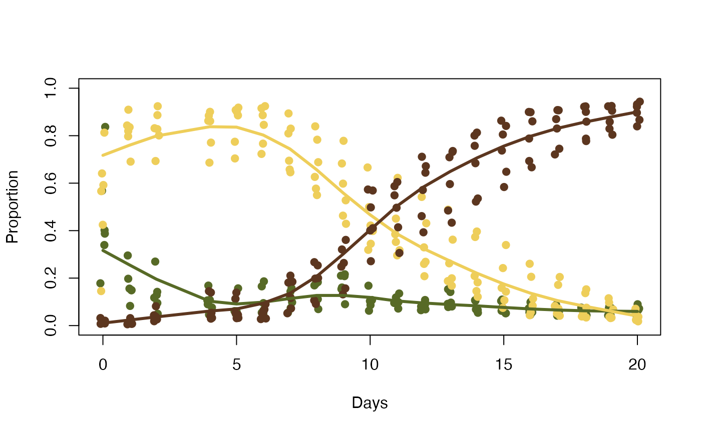

Color information about ripening bananas over 21 days.
Format
A data frame with 220 rows and 19 columns for bananas. A character vector with 10 values for banana_colors.
An object of class data.frame with 220 rows and 8 columns.
An object of class character of length 10.
Details
The data set contains these columns:
fruit: fruit ID (first digit refers to the bunch, second digit that individual fruit);ripeness: ripeness class (under ripe , ripe, very ripe, over ripe;ripe: 0/1 indicator (ripeness == "ripe");treatment: Fridge or basement Room temperature, fruits were randomly assigned;day: days since the start of the study;green: proportion of pixels classified as green relative to the visible surface area;yellow: proportion of pixels classified as yellow relative to the visible surface area;brown: proportion of pixels classified as brown relative to the visible surface area.
The vector has the following colors:
w: white ("#ffffff");g1: dark green ("#576a26");g2: green ("#919e39");yg: yellow-green ("#b1ab3e");y1: yellow ("#d6c350");y2: light yellow ("#eece5a");yb: yellow-brown ("#d1a123");b1: light brown ("#966521");b2: brown ("#5c361f");b3: dark brown ("#261d19").
Examples
head(bananas)
#> fruit ripeness ripe treatment day green yellow brown
#> 1 fruit_11 Under 0 Fridge 0 0.3796618 0.5988353 0.021502968
#> 2 fruit_11 Under 0 Fridge 1 0.3351661 0.6576977 0.007136172
#> 3 fruit_11 Ripe 1 Fridge 2 0.3057067 0.6522746 0.042018752
#> 4 fruit_11 Ripe 1 Fridge 4 0.3986194 0.5279045 0.073476073
#> 5 fruit_11 Ripe 1 Fridge 5 0.3220496 0.4889868 0.188963598
#> 6 fruit_11 Ripe 1 Fridge 6 0.4015645 0.4320256 0.166409861
str(bananas)
#> 'data.frame': 220 obs. of 8 variables:
#> $ fruit : chr "fruit_11" "fruit_11" "fruit_11" "fruit_11" ...
#> $ ripeness : Factor w/ 4 levels "Under","Ripe",..: 1 1 2 2 2 2 3 3 3 3 ...
#> $ ripe : int 0 0 1 1 1 1 0 0 0 0 ...
#> $ treatment: Factor w/ 2 levels "Fridge","Room": 1 1 1 1 1 1 1 1 1 1 ...
#> $ day : int 0 1 2 4 5 6 7 8 9 10 ...
#> $ green : num 0.38 0.335 0.306 0.399 0.322 ...
#> $ yellow : num 0.599 0.658 0.652 0.528 0.489 ...
#> $ brown : num 0.0215 0.00714 0.04202 0.07348 0.18896 ...
summary(bananas)
#> fruit ripeness ripe treatment day
#> Length:220 Under:18 Min. :0.00 Fridge:100 Min. : 0.00
#> Class :character Ripe :55 1st Qu.:0.00 Room :120 1st Qu.: 5.75
#> Mode :character Very :52 Median :0.00 Median :10.50
#> Over :95 Mean :0.25 Mean :10.35
#> 3rd Qu.:0.25 3rd Qu.:15.25
#> Max. :1.00 Max. :20.00
#> green yellow brown
#> Min. :0.03784 Min. :0.01407 Min. :0.003631
#> 1st Qu.:0.06770 1st Qu.:0.01901 1st Qu.:0.102421
#> Median :0.10792 Median :0.26008 Median :0.510134
#> Mean :0.17620 Mean :0.34137 Mean :0.482435
#> 3rd Qu.:0.25731 3rd Qu.:0.62927 3rd Qu.:0.829551
#> Max. :0.83695 Max. :0.92442 Max. :0.946589
banana_colors
#> w g1 g2 yg y1 y2 yb b1
#> "#ffffff" "#576a26" "#919e39" "#b1ab3e" "#d6c350" "#eece5a" "#d1a123" "#966521"
#> b2 b3
#> "#5c361f" "#261d19"
x <- bananas[bananas$treatment == "Room",]
plot(x = jitter(x$day, 0.5), y = x$green,
col = banana_colors["g1"], pch = 19,
xlab = "Days", ylab = "Proportion", ylim = c(0, 1))
points(x = jitter(x$day, 0.5), y = x$yellow,
col = banana_colors["y2"], pch = 19)
points(x = jitter(x$day, 0.5), y = x$brown,
col = banana_colors["b2"], pch = 19)
lines(lowess(x = x$day, y = x$green, f = 0.3),
col = banana_colors["g1"], lwd = 3)
lines(lowess(x = x$day, y = x$yellow, f = 0.3),
col = banana_colors["y2"], lwd = 3)
lines(lowess(x = x$day, y = x$brown, f = 0.3),
col = banana_colors["b2"], lwd = 3)
